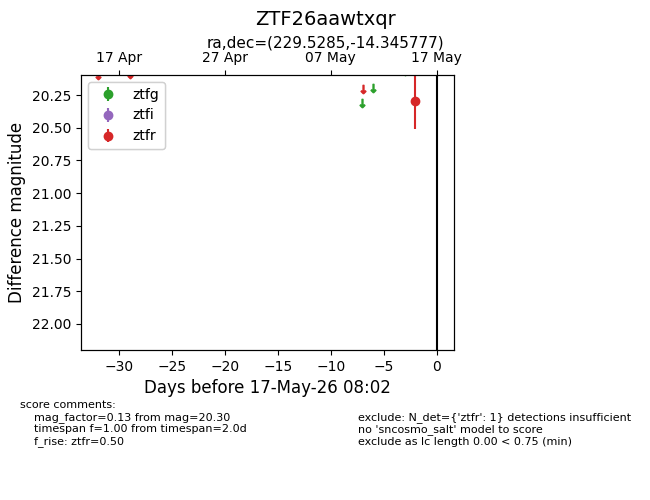
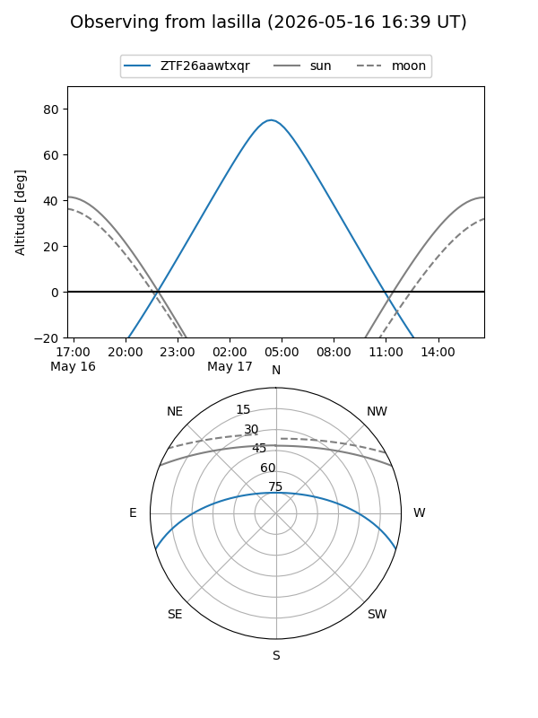
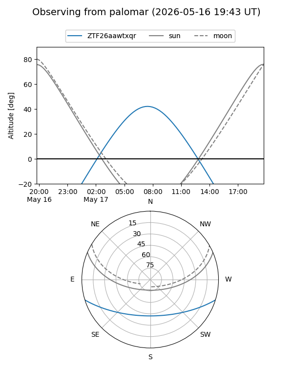

ZTF26aawtxqr
Target ZTF26aawtxqr at 2026-05-17 08:04
Aliases and brokers:
FINK: link
Lasair: link
ALeRCE: link
alt names
ZTF26aawtxqr (ztf,fink_ztf)
Coordinates:
equatorial (ra, dec) = 229.5285,-14.34578
equatorial (HMS+DMS) = 15:18:06.83,-14:20:44.80
galactic (l, b) = (348.1165,+35.35344)
Flags:
Photometry:
last ztfr=20.30
1 ztfr detections
Lightcurve

Visibility


Additional plots